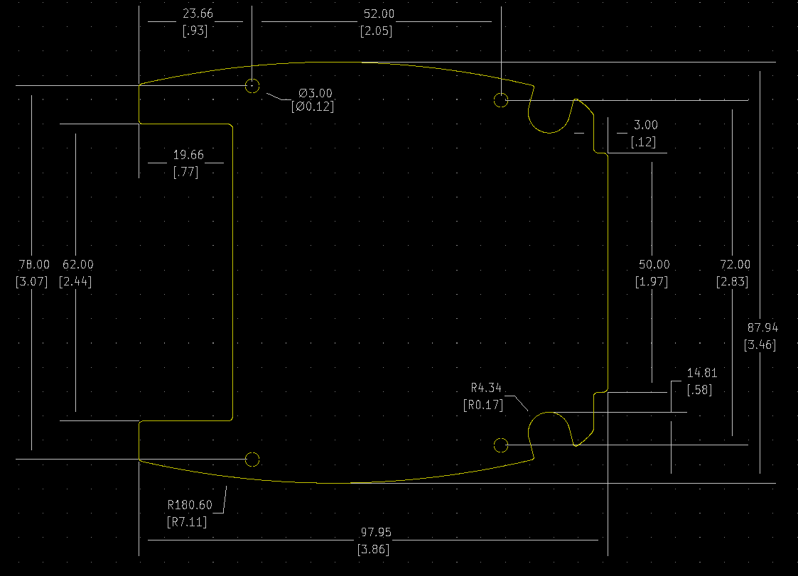

Project template containing the recommended board layout for 1599TABS-BAT
Features:
- Low profile - ergonomically designed for a comfortable fit into the user’s hands.
- Perfect for instrument or mobile data enclosures requiring a touch screen.
- Molded from flame retardant ABS plastic, choice of black or grey. Material carries a UL flammability rating of 94V-0.
- Enclosure is assembled with six (6) - M3-0.5 x 18 mm Phillips machine screws, threaded into integral brass bushings. Perfect for applications when repetitive assembly and disassembly are required.
- Integral brass bushings are factory inserted into the top half of the enclosure (see photos).
- Lap joint construction provides protection against access of dust and splashing water. Designed to meet IP54.
- P.C. board standoffs are molded into case top & bottom halves (see drawings or photos for more details).
- Battery door & compartment version (part numbers ending in “BAT”) includes 8 battery clips (for 4 - AA batteries) and two 9 volt (PP3) battery clips.
- Contains one end panel which is removable for easy modification.
- Bottom half of enclosure includes a molded inlay for labels.
The "Dwgs.User" layer contains all critical dimmensions in milimeters[inches].
The "Edge.Cuts" layer contains the maximum board outline and holes to align with board standoffs.
PCB Preview:
